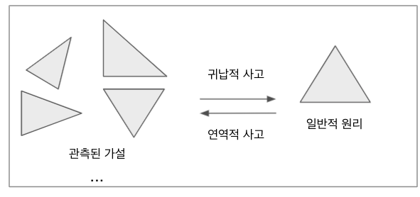

알고리즘을 공부하는 목적은 무엇일까? 알고리즘을 답습(踏襲)해 문제해결 기법을 훈련하는 것이다. 알고리즘을 자신의 언어로 풀어서 체계적으로 생각하는 훈련을 수 있을 것이다. 알고리즘은 귀납적 접근을 기반으로 한다.
귀납적인 접근
알고리즘 학습을 통해 귀납적 사고를 훈련할 수 있다. 귀납적(inductive)이라는 말은 본래 수학 분야에서 왔다. 귀납적이라는 말의 사전적 정의는 개별적인 특수한 사실이나 원리로부터 공통적을 추려내 일반적이고 보편적인 명제 및 법칙을 유도해 내는 일이다.

귀납적 사고는 도미노 효과와 비슷한 방식으로 작동한다. 첫번째 블럭이 넘어지면 두번째 블럭이 넘어지듯이, 전제가 성립하면 결론도 성립하게 된다. 예를 들어 자연수 n이 true라는 것을 단정(딱 잘라서 판단하고 결정함)하는 것을 보일 수 있는 방법은 무엇일까?(이때 n는 무한히 클 수 있다고 가정한다). 자연수 n이 true라는 것을 귀납 추론을 통해 보이는 것이다. 자연수 n이 모두 0이상이다라는 것을 술어 논리(predicate-logic)로 기술하면 다음과 같다.
P(0) // 0은 참이다.
∀n≥0 (P(n)→P(n+1)) // 자연수 n은 0이상이다. P(0)는 true이면 P(n+1)도 true이다.
∴∀n≥0 P(n) // 따라서 모든 자연수 n은 0이상이다. 이때 P(n)은 true이다.
위 술어 논리에서는 개별적인 사실에서 일반적인 결론을 이끌어 내고 있다. 자연수 n이 0이상이다는 것이 명제(참과 거짓을 주장하는 머리말, 예: 참새는 조류이다.)라고 가정했다. 해당 명제를 이끌어 내기 위해 전제 들을 보임으로서 명제가 참임을 검증(proving)해 보이는 것이다. 위 술어 논리에서는 n이 true일때, n+1도 true라는 것을 보임으로서 보편적인 명제를 증명하고 있다. 모든 사람은 죽는다는 결론을 이끌어 내기 위해 추리하는 방법은 개별적인 사실(전제)들을 열거할 수 있다.
$$
소크라테스는 사람이다: Man(SOCRATES)\
$$
$$
플라톤은 사람이다: Man(PLATON)\
$$
$$
모든 사람은 죽는다:\forall x, Man(x)\to Die(x)
$$
위 술어 논리는 결론이 참이다. 즉, 증명할 필요도 없이 결론 그 자체로 참(공리:Axiom)이다. 결론이 항상 참이라고 말할 수 없는 술어 논리도 존재할 수 있다.
$$
사자는 네발로 걷는다: quadrupedalism(TIGER)\
$$
$$
기린은 네발로 걷는다: quadrupedalism(giraffe)\
$$
$$
모든 동물은 네발로 걷는다:\forall x, ANIMAL(x)\to quadrupedalism(x)
$$
위 술어 논리의 결론은 거짓일 수 있다. 왜냐하면, 결론을 부정하는 전제가 존재하기 때문이다. 예를 들어 미어캣, 팽귄, 캥거루 등은 두발로 걷는다. 알고리즘 관점에서 보면, 큰 문제는 작은 문제들로 구성되어 있고, 작은 문제들을 위한 해결 방법이 참인 경우가 증명 되면, 큰 문제의 해결 방법도 참일 가능성이 높아진다. 큰 문제를 풀기 위해 작은 문제 해결에 집중하고 이들을 해결해 이들을 쌓아 추상화(abstraction)하여 보다 큰 문제 풀이에 접근한다.
문제를 어떻게 해결할 수 있을까?
알고리즘(algorithm)은 입력을 처리하기 위한 방법이다. 알고리즘을 배우는 것은 특정 문제 하나를 해결하기 위한 것이 아니다. 문제를 어떻게 간명하게 해결할 수 있을지에 대해 생각하는 법을 배우기 위함이다.
문제를 어떻게 해결할 수 있을까? 양자 물리학자인 리처드 파인만의 문제 해결 알고리즘을 살펴 보기로 하자.
파인만의 문제 해결 알고리즘 (Feynman Problem-Solving Algorithm)
- 칠판에 문제를 적는다. (write down the problem)
- 골똘히 생각한다. (think real hard)
- 칠판에 답안을 적는다. (write down the solution)
왜?라는 질문은 이해를 하기 위한 질문이다. 파인만은 질문을 하고 정통적 사고에 도적하고 호기심을 갖아야 한다고 말하고 있다.
Feynman opposed rote learning or unthinking memorization and other teaching methods that emphasized form over function” (Wikipedia, 2018).
파인만은 기능보다 형태를 강조하는 반복하는 암기 학습, 생각 없는 암기, 기타 교수법에 반대했다.
자신의 언어로 문제를 이해한다.
문제 해결을 위한 첫번째 방법은 문제를 읽고 자신의 언어로 해석하는 것이다. 문제를 자신의 언어로 해석한다는 것은 자신이 이해할 수 있는 언어로 쉽게 표현한다는 것이다. 글이 될 수 도 있고 그림이 될 수 도 있다. 그림이라면 언어에서 표현되지 않는 마음의 심상을 그림으로 명확하게 표현할 수 있어야한다.
- 문제를 자신이 이해할 수 있는 언어로 표현한다.
- 문제를 자신이 이해할 수 있는 그림으로 표현한다.
문제 해결 방법을 찾는다
자신의 언어로 문제를 이해하였다면, 문제 접근을 위해 다양한 관점에서 접근을 시도한다.
- 복잡한 방법을 단순한 방법으로 바꾸어본다
- 큰 문제를 작은 문제로 나눠 본다.
- 해결 순서를 바꾸어 본다.
이러한 시도들을 바탕으로 얻어진 논리적인 인과성을 바탕으로, 문제 해결을 위한 알고리즘을 정의한다. 설계한 알고리즘이 실재 프로그램으로 구현하여 예상되는 출력값을 얻을 수 있을지 검증해 본다.
문제를 최적화 하는 방법을 찾는다
마지막으로 출력은 정상이라면 알고리즘을 좀더 개선할 수 있는 방법은 없을지 고민할 필요가 있다. 1~2건의 입력이 아니라, 입력개수 n을 늘려가며 알고리즘의 속도등을 체크해 본다. 이렇게 n의 개수를 늘려가며 성능을 분석하는 방법을 점근접 분석이라고 한다. 속도가 느리다면 알고리즘을 최적화할 수 있는 방법이 없을지를 고민한다. 이러한 알고리즘 설계와 구현 경험들이 쌓일 수록 무제를 어떻게 좀더 풀 수 있을지를 알게 된다.
문제 해결 방법을 정리한다.
문제 해결을 위한 알고리즘 개발이 완료 되었다면, 알고리즘을 정리할 필요가 있다. 알고리즘은 다음 관점에서 정리할 필요가 있다.
- 알고리즘은 명확하고, 이해하기 쉽게 정리한다. 예) 배열인 경우 A[1…n]의 최대값과 같이 명확한 표현 이용
예를 들어 배열의 수를 합하는 알고리즘을 정의 해 보자.
sum(A[]){
sum = 0
for i to n
sum = sum + A[i]
return sum
}
위 알고리즘 표기는 모호함이 없고, 명확하다 프로그래밍 언어와 관련 없이 이해할 수 있다.
알고리즘 응용 예시
하나의 프로그램이 동작하기 위해서는 여러 모듈이 모여서 하나의 프로그램이 돌아간다. 알고리즘으로 푸는 문제들은 세상에 많다.
- 네비게이션 시스템 : 최단 경로를 구하기 위해 정렬이나 탐색과 같이 고도의 알고리즘이 필요할 수 도 있다.
- 검색 엔진 : 수조개 이상의 문서에서 사용자가 원하는 문서 검색을 한다.
- 주식 거래 : 전세계 주식 거래의 70%가 프로그램에 의해 이뤄진다.
- 로봇청소기 : 경로 계획(Path Planing)을 할 수 있는 알고리즘을 이용
기본 알고리즘
프로그래밍 처리를 용이하게 하는 모듈도 존재할 수 있다. 요즘 같이 라이브러리와 솔루션이 넘쳐나는 시점에 알고리즘 공부에 집착할 필요가 있겠냐고 물을 수 있겠지만, 핵심되는 엔진 프로그램을 만들거나, 현재 프로그램을 보다 높은 성능으로 개선하기 위해서는 알고리즘 에서 사용했던 기법(technique)을 참고한 문제 해결 방법이 필요한 것이다. 이런 알고리즘은 몇가지 응용 가능한 기본 구조가 있다.
- Branch and Bound
- Backtracking
- Recursion
- Divice and Conquer
- Dynamic Programming
- Greedy Method
세상에는 수많은 알고리즘이 존재한다. 다양한 알고리즘을 해결하고 접하는 것도 좋지만, 기본기가 되는 알고리즘을 반복해서 연습하는 것이 중요하다. 기본 알고리즘의 예로 다음과 같다.
- QuickSort
- Binary Search, Binary Search Tree
- DFS/BFS
- Prims Algorithm
- Dijkstra's Algorithm
- Hashing, Binary Heap
이소룡은 기본기와 관련해 다음과 같은 말을 남겼다. 만 가지의 킥 동작을 한번씩 연습한 사람이 두려운 게 아니라 한 가지 킥 동작을 만 번 연습한 사람이 두렵다.
첨부
1. 술어 논리 기호
논리 연결 기호(Logical connectives) : ¬, ∧, ∨, →, ↔
한정자(Quantifiers) : ∀(전체 한정자), ∃(존재 한정자) // 참, 거짓 판별을 위해 논리 범위를 정의하는 역할
괄호(Brackets): (, ), [, ]